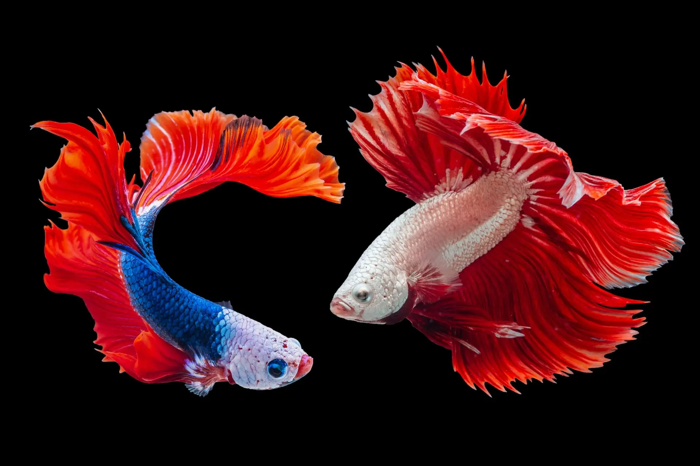

My terminal setup

Having an efficient and tailored terminal setup is almost as important as your IDE or code editor in my opinion. Lets face it, whether your a Software Engineer, working DevOps or any other role within IT, chances are pretty good you will be spending a lot of your time working inside a terminal window.
It also does not hurt if your terminal looks great when you boasting your terminal skills to your colleagues at work. See below a short tutorial to replicate my current implementation, which I find efficient, informative and just looks nice.
-
Install iTerm2
iTerm2, is arguably the most popular, customizable and great looking terminal window. Therefore my first choice for laying the foundation of a great terminal experience.
Install iTerm2 terminal using Homebrew or download the installer from iTerm2's website here.
brew install --cask iterm2
-
Customize iTerm2
The default look of iTerm2 is already pretty good but I like changing a few things. Launch iTerm2 and navigate to the Preferences menu (command + ,).
-
On the Appearance tab, choose "Dark" in the Theme dropdown menu.
- On the Profiles tab, choose the "Default" profile and select Colors. I am using "Dracula+" as a Color Preset.
- On the Text tab, change the Font and the Size. I am using a font which I installed separately beforehand, namely "Fira Code", with a font size of "15".
That's all that needs changing with regards to iTerm. I will however mention that configuring multiple profiles to automatically switch and change your terminal background color when you SSH to Hosts for example PROD, BETA, DEV is really helpful. It provides you with a quick context reminder especially when you have multiple terminal sessions running at the same time. See this link in order to configure multiple profiles to change when you ssh to a specific host.
-
Install Oh My Zsh
Oh My Zsh, is a custom implementation of the classic zsh shell. Think of it as a framework which allows you to easily customize and tailor your zsh setup.
Firstly change your shell to use zsh if not already done (macOS Mojave and earlier (10.14-)).
- Open up the User's & Groups panel in System Preferences.
- Ensure the panel is unlocked (bottom left).
- Control click on your username (top left) and select Advanced Options... (This is only available if you are an Administrator).
- Change the Login shell value to "/bin/zsh".
- Click OK to save your changes.
Once your default shell is configured to use zsh, there are two methods for installing Oh My Zsh, via curl or wget:
sh -c "$(curl -fsSL https://raw.github.com/ohmyzsh/ohmyzsh/master/tools/install.sh)"
sh -c "$(wget https://raw.github.com/ohmyzsh/ohmyzsh/master/tools/install.sh -O -)"
Once you installed Oh My Zsh, close and re-open your terminal window.
-
Customize Oh My Zsh
Open ~/.zshrc with your favourite terminal text editer. I prefer nano.
nano ~/.zshrc
Add/edit below in your local .zshrc file:
ZSH_THEME="spaceship" # My current favorite theme
DEFAULT_USER=<enter_username> # This avoids your username appearing in the prompt
plugins=(
git
osx
python
)
# Aliases - You can add more but these are the essentials for me.
# Favourites
alias zshconfig="nano /.zshrc"
alias reload="source /.zshrc"
alias va="source venv/bin/activate"
alias vd="deactivate"
alias ls="ls -GFh"
alias ll="ls -GFhl"
# Git
alias gs="git status"
alias ga="git add -A"
alias gl="git log"
alias gd='git diff'
alias gm='git commit -m'
alias gma='git commit -am'
alias gb='git branch'
alias gc='git checkout'
5. Other ~/.zshrc configurations
AWS CLI
I use the AWS CLI a lot and without the below variable exported to the current terminal session, the API responses are returned to less, which I personally dislike. The below variable export will print it out to STD OUT in the terminal window only.
export AWS_PAGER=""
Pyenv
I use pyenv to manage my Python versions and virtual environment. In order for it to work correctly you will require the below in your .zshrc configuration file as well:
export PYENV_ROOT="$HOME/.pyenv"
export PATH="$PYENV_ROOT/bin:$PATH"
if command -v pyenv 1>/dev/null 2>&1; then
eval "$(pyenv init -)"
fi
eval "$(pyenv virtualenv-init -)"
That's it, basic, but found this setup to work for me day-to-day in most environments. From here you can extend and modify your terminal experience to your specific needs.
That is all for now and have fun showing off your new terminal!